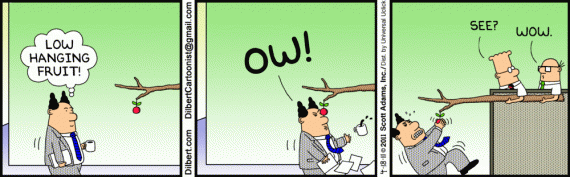

class: center, middle background-color: black .title[Programming Strategically with the Principle of Least Power] .author[Leif Wickland] <img width="60%" src="assets\rubicon-logo.svg"> --- background-image: url("assets/IMG_20160417_170409.jpg") padding: 0px 0px 0px 0px background-size: contain; background-repeat: no-repeat; background-position: center; --- # Credit to Li Haoyi .right[] - Strongly inspired by his [blog](http://www.lihaoyi.com/). - Wicked smart. Scala.js. Amonite. - Good parts are his. - Anything stupid is mine. - Originally he wrote about Scala. --- class: left, middle background-image: url(assets/icbm.jpg) # Strategic<br>Power --- # Principle of Least Power .quote[ Given a choice of solutions, pick the least powerful solution capable of solving your problem ] — [Li Haoyi](http://www.lihaoyi.com/post/StrategicScalaStylePrincipleofLeastPower.html) --- # Developers seek power & flexibility .right[<img src="https://m.popkey.co/5e278e/kdKdw.gif" width=500px; style="float: right; margin: 10px">] - _My design is so flexible!_ - _I'm not exactly sure how I'm going to do it, so…_ - _The requirements might change, so…_ --- # With Great Power - If it can do anything it _might do anything_ - Bigger possible space to consider --- # Motivation .quote[ A restricted solution that … can only do a few things is straightforward for someone to inspect, analyze and manipulate later. ] — [Li Haoyi](http://www.lihaoyi.com/post/StrategicScalaStylePrincipleofLeastPower.html) --- # Essay .quote[ transitive verb<br> to try to do, perform, or deal with ] ## Can the principle of least power be applied to other languages? --- class: center, middle  --- ```cs switch (n) { case 1: cost += 25; break; case 2: cost += 25; goto case 1; case 3: cost += 50; goto case 1; default: Console.WriteLine("Invalid selection."); break; } ``` From [MSDN `goto` docs](https://msdn.microsoft.com/en-us/library/13940fs2.aspx) --- .huge[ 1968: _Go To Statement Considered Harmful_ ] I promised you details about our languages becoming more powerful in _recent_ years. --- class: center, middle .huge[ PHP 5.3 added `goto` in 2009 ] --- class: center, middle .huge[ PHP 5.3 added `goto` in 2009 ] --- ```java Baz baz = null; while (true) { // 20 lines calculating foo if (!validate(foo)) break; // 30 lines calculting bar if (!validate(bar)) break; // Another 30 lines calculating other values baz = new Baz(foo, bar, ...); break; } return baz; ``` --- ```java Foo foo = calculateFoo(); Bar bar = calculateBar(); // Another few lines calculating other values if (validate(foo) && validate(bar) && /* validate some other things */) { return new Baz(foo, bar, ...); } else { return null; } ``` --- class: middle, center .huge[ Immutability changes everything ] --- .All major --- class: middle ```javascript var label; if (havingGoodDay(bob)) label = "ok"; else label = "bitter"; // ----- or ----- const label = (havingGoodDay(bob)) ? "good" : "bitter"; ``` --- background-image: url("assets/const.png") padding: 0px 0px 0px 0px background-size: contain; background-repeat: no-repeat; background-position: center; --- ```javascript function tellMeAboutYourFeels() { if (goodDay(bob)) return "hawt"; if (badDay(bob)) return "bitter"; return "meh"; } // ----- or ----- function tellMeAboutYourFeels() { var feels = "meh"; if (goodDay(bob)) feels = "hawt"; else if (badDay(bob)) feels = "bitter"; return feels; } ``` --- # Prefer Immutabilty - As far as possible - Except if you really need the perf improvement - Spoiler: Very little of your code does - Limit the scope of mutabilty --- background-image: url("assets/doublej.jpg") padding: 0px 0px 0px 0px background-size: contain; background-repeat: no-repeat; background-position: center; --- ```java const ImmutableList<String> names = myBffs(); // ----- or ----- ImmutableList<String> names = myBffs(); // ----- or ----- const List<String> names = myBffs(); // ----- or ----- List<String> names = myBffs(); ``` <image src="assets/friends.png" width=200px style="float:left; margin: 0 20px 20px 20px;"> .medium[No double mutability] --- # TODO: Published interfaces --- # TODO: Keep or drop? ```c OSStatus err; // 30 lines of awesome elided if ((err = SSLHashSHA1.update(...)) != 0) goto fail; if ((err = SSLHashSHA1.update(...)) != 0) goto fail; goto fail; // 20 more lines of awesome elided fail: return err; ``` from [sslKeyExchange.c](http://opensource.apple.com/source/Security/Security-55471/libsecurity_ssl/lib/sslKeyExchange.c) --- # Better? ```c OSStatus err; // 30 lines of awesome elided (err = SSLHashSHA1.update(...)) == 0 && (err = SSLHashSHA1.update(...)) == 0 && // 20 lines more awesome return err; ``` ---